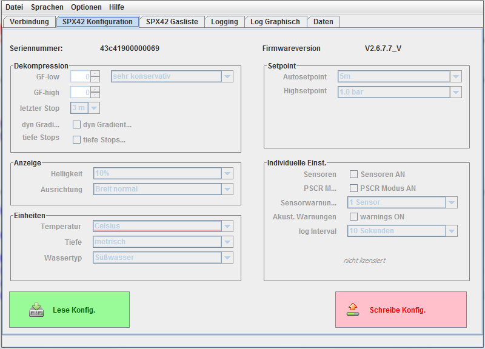
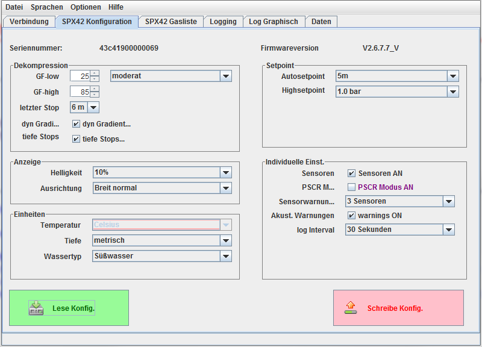

SPX42 Konfiguration
wenn der SPX42 mit dem Programm verbunden ist, wird der "SPX42 Konfiguration"
Tab aktiviert. Zunächst sind hier nur die Seriennummer und die Firmwareversion
relevant. Alle Bedienelemente außer der Button "Lese Konfig" sind deaktiviert.

Ausgangszustand des Konfigurations-Tab
Bei Druck auf den "Lese Konfig" Button wird die aktuelle Konfiguration vom
SPX42 eingelesen, angezeigt und die Bedienelemente werden aktiviert.

Konfiguration gelesen
Nach etwa einer Minute wird sich der Titel des Fensters ändern. dort wird
die aktuelle Spannung des Ackus des SPX42 angezeigt. Diese wird ca einmal
pro Minute aktualisiert.
Nachdem alle Einstellungen wunschgemäß eingetragen wurden, schreibt ein
Druck auf den Button "Schreibe Konfig" die Konfiguration in den verbundenen
SPX42 zurück.
zum Inhalt
Abhängig von der erworbenen Lizenz des SPX42 wird der Abschnitt
"Individuelle Einst" nicht angezeigt, wenn die Softwearelizenz dafür nicht
erworben wurde.
Es lassen sich somit auch keine Einstellungen in diesem Bereich vornehmen.
zum Inhalt
zum Inhalt